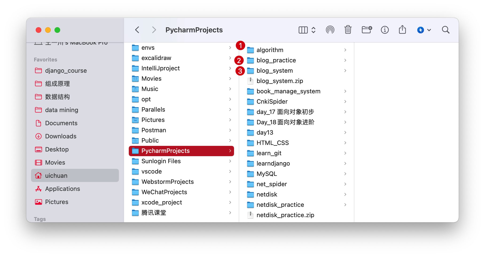
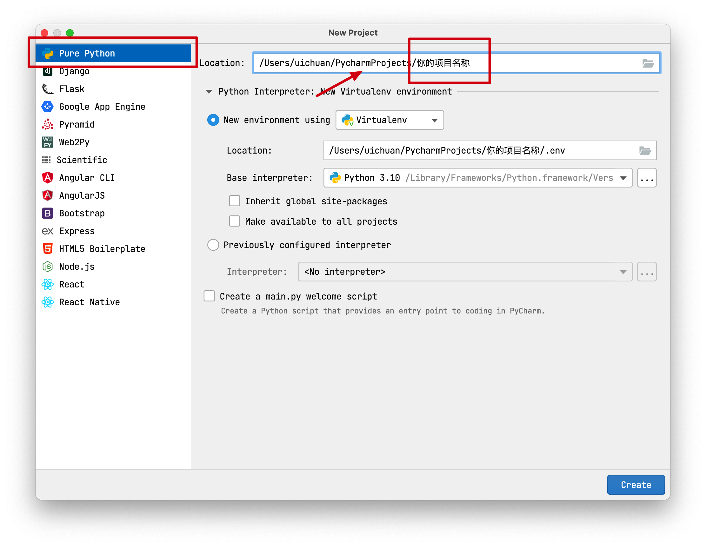
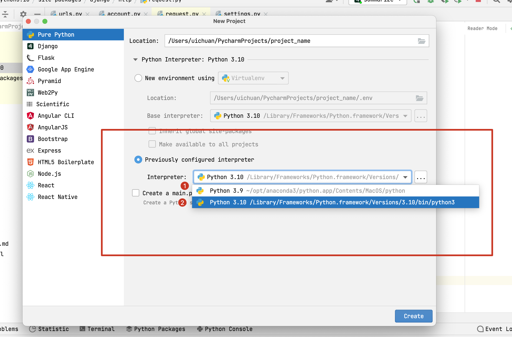
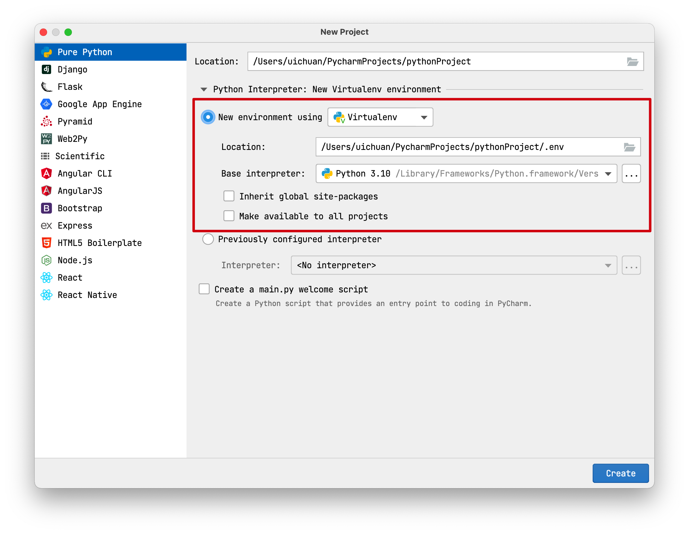
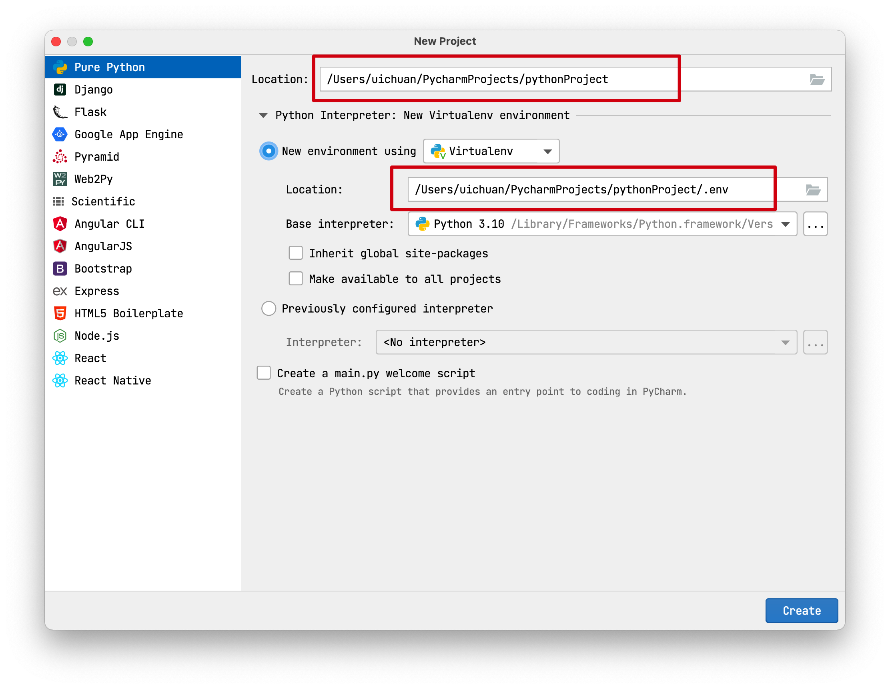
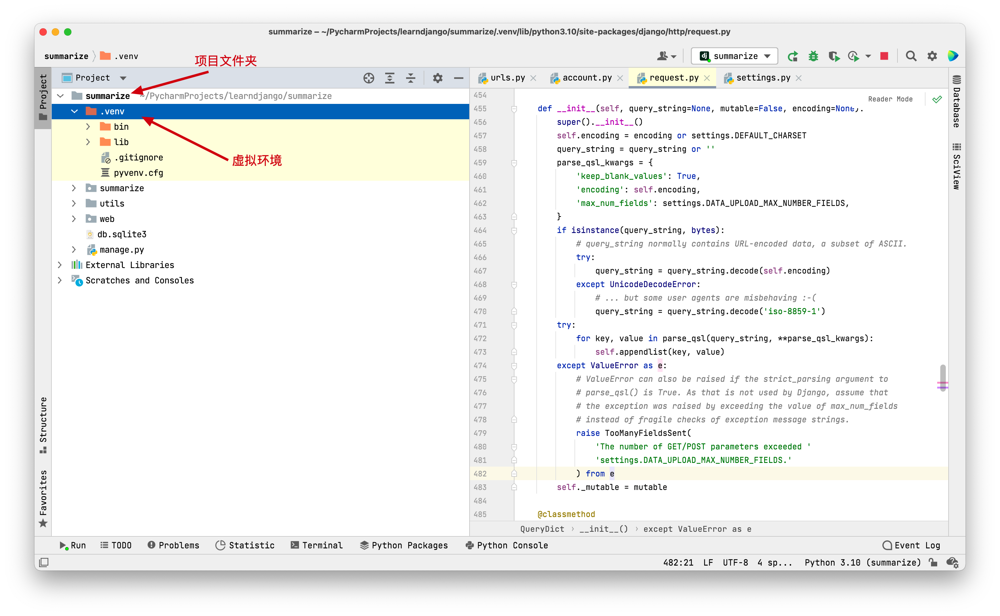
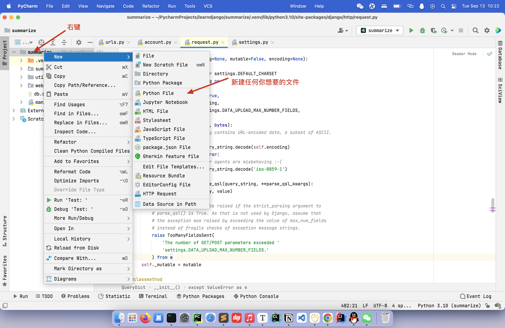
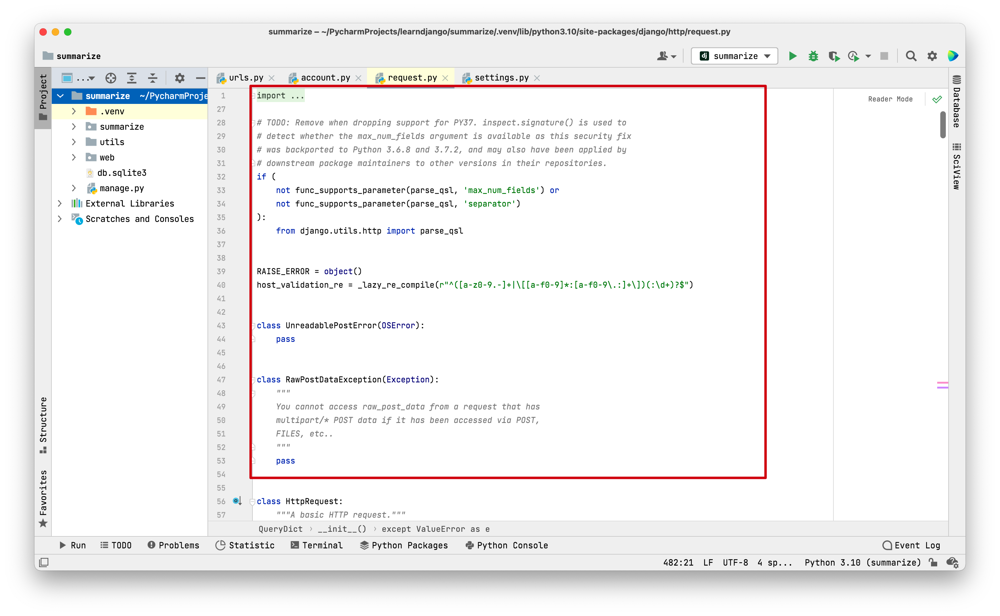
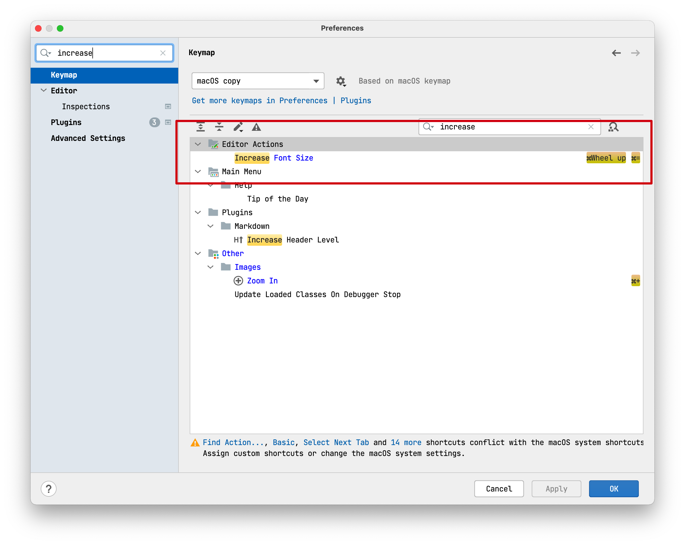

8.Pycharm 帮助
前戏
关于你的项目应该存储在什么地方
这是我的习惯：
所有的项目都存储在PycharmProjects文件夹下
（你可以在一个自己常用的位置新建一个名为PycharmProjects的文件夹）

这是我电脑中的PycharmProjects文件夹

里面有很多项目
1.新建项目
选择新建纯净的Python项目，放在PycharmProjects文件夹下

2.Python解释器的配置
2.1 基于系统解释器创建

系统解释器 是电脑上安装的python解释器，可以通过找到python解释器的路径进行配置

我的电脑上有两个系统解释器
分别是python3.9和python3.10
基于系统解释器创建项目的缺点
python十分依赖外部的模块（site-packeges）
这些模块会存储在系统解释器文件夹中的site-packages中

如果所有的项目（在进行一些复杂项目时）都用同一个系统解释器，会有各种各样的模块，可能会导致一些混乱
同时，不同的项目可能需要不同的python解释器版本
所以，更加推荐虚拟环境

2.2 虚拟环境
虚拟环境是基于系统解释器生成的一个独立的虚拟环境解释器，
对于公共的功能，虚拟环境解释器会继承系统解释器的功能，拓展出的功能和安装的模块，会独立存储在虚拟环境所在的文件夹中
一般虚拟环境的位置会选择在项目目录下创建一个隐藏文件夹（.env）来存放虚拟环境


ok，做完这些就完事大吉了，恭喜🎈
3.新建文件夹与文件

4.一些快捷键的配置
-
缩放代码区域的大小

进入设置，搜索increase，设置增大字体的快捷键

我一般设置为按住contrl 然后滚动鼠标滚轮来增大字体
之后同理搜索decrease，设置减小字体的快捷键

-
如何让代码更工整？
找到顶部栏
refactor -> reformat code
5.more
还有一些操作，不太好用语言描述，如果哪次开会或者交流可以再聊